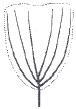

유기농업기사 (2010-07-25 기출문제)
1과목: 재배원론
1. 벼에서 관수해(冠水害)가 가장 큰 시기는?
- 묘대기
- 분얼초기
- 출수개화기
- 등숙기
(정답률: 알수없음)

2. 대기오염물질이 식물생육에 미치는 영향으로 가장 거리가 먼 것은?
- 잎표면에는 반점이 생기나 뿌리의 활력은 증대된다.
- 대기오염물질은 대부분 기공을 통하여 식물체내로 들어온다.
- 불소계가스, 염소, 오존 등은 독성이 강한 물질이다.
- 광합성 능력의 저하로 식물의 생육이 저하된다.
(정답률: 알수없음)
3. 풍속이 2~4m/s 이상일 때 식물체에서 일어나는 생리적 장해 현상이 아닌 것은?
- 작물 체온이 낮아진다.
- 수분ㆍ수정이 저해된다.
- CO2의 흡입량이 과다하게 증대된다.
- 습도가 낮으면 백수현상이 나타난다.
(정답률: 알수없음)
4. 벼의 키다리병에서 유래한 식물생장조절제는?
- 지베렐린
- 옥신
- 시토키닌
- 에틸렌
(정답률: 알수없음)
5. 수발아를 방지하기 위한 대책으로 옳은 것은?
- 수확을 지연시킨다.
- 지베렐린을 살포한다.
- 만숙종보다 조숙종을 선택한다.
- 휴면기간이 짧은 품종을 선택한다.
(정답률: 알수없음)
6. 감자나 양파 같은 영양체의 맹아억제를 위하여 주로 사용하는 방사선은?
- α선
- β선
- γ선
- X 선
(정답률: 알수없음)
7. 맥류 재배에서 종자 파종량이 가장 많이 소요되는 파종 방식은?
- 점파
- 조파
- 적파
- 산파
(정답률: 64%)
8. 식물체 줄기의 정아(頂芽)생장을 촉진하고 측아(側芽)생장을 억제하는 식물생장조절물질은?
- 옥신
- 지베렐린
- 아브시스산
- 에틸렌
(정답률: 알수없음)
9. 내식성(耐蝕性) 작물에 해당하는 것은?
- 옥수수
- 담배
- 알팔파
- 목화
(정답률: 알수없음)
10. 우리나라 벼농사에서 소모도장효과가 가장 큰 시기는?
- 1~2월
- 4~5월
- 7~8월
- 10~11월
(정답률: 알수없음)
11. 화학적으로 염기성 비료에 속하는 것은?
- (NH4)2SO4
- CaCN2
- NH4NO3
- K2SO4
(정답률: 37%)
12. 감자(뿌리작물)의 수량계산 공식으로 옳은 것은?
- 식물체 당 무게 × 단위면적당 식물체 수
- 단위면적 당 덩이줄기 수 × 식물체 당 무게
- 단위면적 당 식물체 수 × 단위면적 당 덩이줄기 수
- 단위면적 당 식물체 수 × 식물체 당 덩이줄기 수 × 덩이줄기의 무게
(정답률: 알수없음)
13. 답리작 맥류재배에서 가장 중요한 품종의 특성은?
- 저온발아성
- 만식적응성
- 관수저항성
- 조숙성
(정답률: 40%)
14. 100립중이 24g인 종자를 60cm × 10cm 간격으로 1주 3립으로 파종한다면 1000m2에 필요한 종자량은?
- 4kg
- 8kg
- 12kg
- 16kg
(정답률: 알수없음)
15. 토양 입단의 형성과 발달에 도움이 되는 방법은?
- 경운
- 입단의 팽창과 수축의 반복
- 콩과작물의 재배
- 나트륨이온의 증가
(정답률: 알수없음)
16. 과수재배에서 기본적인 정지법 중 그림과 같이 주간을 일찍 자르고 3~4본의 주지를 발달시켜 술잔 모양으로 만드는 정지법은?

- 개심형
- 원추형
- 변칙주간형
- 울타리형
(정답률: 알수없음)
17. 벼의 출수와 관련된 기상생태형에 대한 설명으로 옳은 것은?
- 조기수확을 목적으로 조파조식 할 때는 감광형이 알맞다.
- 벼의 감광형은 묘대일수감응도가 낮고, 만식적응성도 크다.
- 조파조식 할 때보다 만파만식 할 때에 출수기 지연 정도는 감광형이 크다.
- 일반적으로 적도와 같은 저위도지대에서 감온성이 큰 것은 수확량 증대에 유리하다.
(정답률: 알수없음)
18. 우리나라 농업의 당면과제와 거리가 먼 것은?
- 생산성 향상
- 작형의 분화
- 유통구조 개선
- 생산품목의 단일화
(정답률: 82%)
19. 작물의 내동성이 약한 조건은?
- 작물체내 전분함량이 많을 때
- 원형질의 친수성 교질물이 많을 때
- 세포내의 무기성분이 많을 때
- 원형질막의 점도(粘度)가 낮을 때
(정답률: 알수없음)
20. 간작(사이짓기)의 대표적인 형태는?
- 맥류의 줄 사이에 콩의 재배
- 벼 수확 후 보리의 재배
- 논두렁에 콩의 재배
- 콩밭에 수수나 옥수수를 일정 간격으로 재배
(정답률: 알수없음)
2과목: 토양비옥도 및 관리
21. 탄질률(C/N율)이 매우 높은 유기물을 토양에 시용하였을 때 나타날 수 있는 현상은?
- 질소의 부동화
- 유리질소의 고정
- 암모니아의 휘산
- 탈질
(정답률: 알수없음)
22. 식초산석회와 같은 약산의 염으로 용출되는 수소이온에 기인된 토양의 산성을 무엇이라 하는가?
- 가수산성
- 활산성
- 치환산성
- 잠산성
(정답률: 알수없음)
23. 토양에 투입된 신선한 유기화합물의 분해에 대한 설명으로 틀린 것은?
- 일반적으로 처음엔 분해가 느리게 일어나다가 가속화되는 경향이 있다.
- 호기성 분해보다 혐기성 분해에 의해 생성된 유기화합물의 에너지가 더 높다.
- 토양토착형 미생물이 토양발효형 미생물보다 우선적으로 분해에 관여한다.
- 분해가 가속화되는 시기에 심지어 토양부식의 양이 줄기도 한다.
(정답률: 알수없음)
24. 토양분류 시 특정 토양의 특성을 나타내는 최소의 시료채취단위(최소용적의 단위체)를 나타내는 용어는?
- Polypedon
- Landscape
- Pedon
- Soil lndividual
(정답률: 알수없음)
25. 작물의 생육에 필요불가결한 필수원소에는 속하지 않지만 삼투압 및 이온균형조절, 광합성과정에서의 물의 광분해에 관여하는 원소는?(오류 신고가 접수된 문제입니다. 반드시 정답과 해설을 확인하시기 바랍니다.)
- B
- Cl
- Si
- Na
(정답률: 알수없음)
26. 토양생물의 활성을 측정하는 방법으로 거리가 먼 것은?
- 개체수(CFU)
- 생체량(Biomass)
- 호흡량
- 토양 EC
(정답률: 64%)
27. 습답에 대한 설명으로 거리가 먼 것은?
- 지하수위가 높아 연중 담수상태에 있다.
- 암회색 글라이(glei)층이 표층 가까이까지 발달한다.
- 영양성분의 불용화로 식물생육에 적당하다.
- 유기물의 혐기분해로 인해 유기산류나 황화수소 등이 토층에 쌓인다.
(정답률: 알수없음)
28. 토양침식의 억제 방법에 대한 설명으로 틀린 것은?
- 부초법은 토양침식 억제를 위한 지표면 피복법이다.
- 지표면 피복을 위한 유기자재는 C/N율이 낮을수록 유리하다.
- 크릴리움(krillium)은 토양입단구조 증진을 위한 침식 억제제이다.
- 완숙퇴비보다 미숙퇴비가 내수성 입단화에 효과적이다.
(정답률: 알수없음)
29. 토양산도와 가장 밀접한 관계가 있는 것은?
- 토양의 색
- 토성
- 염기포화도
- 토양의 구조
(정답률: 70%)
30. 점토광물의 표면에 영구음전하가 존재하는 원인은 동형치환과 변두리전하에 의한 것이다. 이중 점토 광물의 변두리전하에만 의존하여 영구음전하가 존재하는 점토광물은?
- Kaolinite
- Montmorillonite
- Vermiculite
- Allophane
(정답률: 알수없음)
31. 점토광물을 분쇄하면 양이온교환용량이 증가하는 가장 큰 이유는?
- 동형치환이 많이 이루어지기 때문이다.
- 잠시적 전하가 늘어나기 때문이다.
- 변두리 전하가 늘어나기 때문이다.
- 표면전하 밀도가 높아지기 때문이다.
(정답률: 55%)
32. 환원조건에서 탈질과정으로부터 자유로운 질소 화합물 형태는?
- NO3-
- NH4+
- NO2-
- NO
(정답률: 알수없음)
33. 균근(mycorrhizae)의 기능이 아닌 것은?
- 한발에 대한 저항성 증가
- 인산의 흡수 증가
- 토양의 입단화 촉진
- 식물체에 탄수화물 공급
(정답률: 알수없음)
34. 산성토양의 개량방법으로 적합하지 않은 것은?
- 농용석회 시용
- 황산석회 시용
- 완숙 유기물의 시용
- 패각분말 시용
(정답률: 알수없음)
35. 환원상태에서 황화물이 되어 난용성으로 됨으로써 장해가 경감되는 중금속이 아닌 것은?
- Cd
- As
- Ni
- Zn
(정답률: 46%)
36. 시설원예 토양의 특성이 아닌 것은?
- 염류농도가 높다.
- 토양의 공극률이 높다.
- 특정성분의 양분이 결핍되기 쉽다.
- 토양전염성 병해충의 발생이 높다.
(정답률: 알수없음)
37. 지각을 구성하는 원소 중 함량이 가장 많은 것은?
- 알루미늄(Al)
- 규소(Si)
- 산소(O)
- 칼슘(Ca)
(정답률: 알수없음)
38. 습지나 얕은 호수에 식물 유체가 쌓여 생성된 토양은?
- 이탄토
- 수적토
- 운적토
- 붕적토
(정답률: 알수없음)
39. 토양 생성에 관여하는 풍화작용 중 성질이 다른 하나는?
- 산화작용
- 가수분해작용
- 수화작용
- 침식작용
(정답률: 알수없음)
40. 토양 중 부식의 기능으로 틀린 것은?
- 인산 집적량 증대
- 부수력 증대
- 양이온교환용량 증대
- 유해물질의 독성 감소
(정답률: 알수없음)
3과목: 유기농업개론
41. 지력을 유지ㆍ증진시키기 위한 재배적 조치와 거리가 먼 것은?
- 식물 피복을 통한 토양유실 방지
- 잦은 경운
- 윤작 재배
- 충분한 양분관리
(정답률: 79%)
42. 유기농업 단체가 아닌 것은?
- ISOFAR
- ARNOA
- Codex
- IFOAM
(정답률: 알수없음)
43. 유기축산물 인증기준에 따라 사료에 첨가 할 수 있는 물질은?
- 비단백태질소화합물
- 가축의 대사기능 촉진을 위한 합성화합물
- 가축의 질병예방과 항균력 향상을 위한 항생제
- 우유 및 유제품
(정답률: 알수없음)
44. 볍씨의 발아 최적온도 범위로 가장 적합한 것은?
- 16~20℃
- 21~25℃
- 26~30℃
- 30~34℃
(정답률: 알수없음)
45. 최근 국제 사료가격 급등으로 우리나라 남부지방을 중심으로 논을 이용한 조사료용 청보리(총체보리) 재배면적이 증가하고 있다. 청보리 재배의 장점이 아닌 것은?
- 국내에서 종자 구입이 가능하다.
- 사료가치가 양호하다.
- 비육용 소의 후기 급여 시 육질개선 효과가 높다.
- 완숙기에 수확한 다음 후작물인 벼를 이앙을 하여도 벼 수량에 영향이 없다.
(정답률: 알수없음)
46. 유기농업에서 저항성 품종의 개발 효과와 거리가 먼 것은?
- 재배의 안전성 향상
- 기능성 농산물 생산
- 수량성 증대
- 생산비 절감
(정답률: 알수없음)
47. 유기축산을 실시함으로서 나타나는 기능이 아닌 것은?
- 동물복지의 향상
- 안전한 육류식품의 생산
- 구비활용에 의한 지력 감퇴
- 농가 부산물을 가축에 이용
(정답률: 알수없음)
48. 유기농법에 의한 토양관리 방법으로 거리가 먼 것은?
- 합리적인 작물 윤작
- 완숙퇴비의 시용을 통한 토양미생물 수의 증가
- 최대의 토양피복 유지
- 최대 수의 가축 방목
(정답률: 알수없음)
49. 성숙한 배낭 내 난세포의 수와 그 핵상으로 옳은 것은?
- 세포 1개, 핵상 n
- 세포 1개, 핵상 2n
- 세포 2개, 핵상 n
- 세포 2개, 핵상 2n
(정답률: 알수없음)
50. [부엽토와 지렁이] 라는 책에서 자연에서 지렁이가 담당하는 역할에 대하여 기술하면서 만일 지렁이가 없다면 식물은 죽어 사라지게 될 것이라고 결론지은 유기농법의 이론적 근거를 최초로 제공한 사람은?
- JㆍIㆍRodaler
- Maria Jhun
- Charles Darwin
- Hans Mueller
(정답률: 알수없음)
51. 염류농도 장해의 대책으로 적절하지 않은 것은?
- 토양을 깊게 갈아준다.
- 객토를 실시한다.
- 시비량을 증가시킨다.
- 토양표면에 물을 댄다.
(정답률: 70%)
52. 유기축산물 생산을 위한 유기사료의 분류에서 조사료가 아닌 것은?
- 배합사료
- 건초
- 볏짚
- 사일리지
(정답률: 55%)
53. 벼의 유기재배에서 친환경ㆍ고품질ㆍ수량 확보를 위한 방법으로 바람직하지 않은 것은?
- 품종을 선택함에 있어서 생리적 내비성이 큰 품종을 선택한다.
- 개엽의 동화능력이 큰 품종보다 포장 동화능력이 큰 품종을 선택한다.
- 경제성을 확보하려면 가급적 수확지수(harvest index)가 큰 품종을 선택한다.
- 고품질을 위해 쌀의 단백질 함량이 높아지도록 재배한다.
(정답률: 알수없음)
54. 타감작용을 나타내는 작물과 거리가 먼 것은?
- 두과작물로 콩 종류와 자운영
- 상추, 배추, 오이
- 겨울호밀, 해바라기
- 헤어리베치, 메밀
(정답률: 알수없음)
55. 제초제를 사용하지 않고 친환경 잡초방제를 할 경우 다음 중 어떤 품종의 벼를 선택하는 것이 잡초 발생 억제에 도움이 되겠는가?
- 재래종
- 추청벼
- 일품벼
- 통일벼
(정답률: 알수없음)
56. 과수류 중 기지현상이 가장 심한 것은?
- 사과나무
- 포도나무
- 감나무
- 복숭아나무
(정답률: 알수없음)
57. 플라스틱필름하우스의 하나인 대형 터널하우스의 특징으로 거리가 먼 것은?
- 보온성이 양호하다.
- 내설성(耐雪性)이 취약하다.
- 환기능률이 높아 과습에 강하다.
- 광이 고르게 입사하여 채광이 용이하다.
(정답률: 알수없음)
58. 유기종자의 조건으로 거리가 먼 것은?
- 병충해 저항성이 높은 종자
- 화학비료로 전량 시비하여 재배한 작물에서 채종한 종자
- 농약으로 종자 소독을 하지 않은 종자
- 유기농법으로 재배한 작물에서 채종한 종자
(정답률: 90%)
59. 농경지에서 토양병해충이 증가하는 주요 원인은?
- 다모작재배, 윤작재배 및 유기시비를 할 때
- 단작재배, 연작재배 및 화학비료 과용 할 때
- 생물농약에 의한 병충해 방제를 할 때
- 자연농법과 유기농법을 사용할 때
(정답률: 알수없음)
60. 윤작의 효과에 대한 설명으로 틀린 것은?
- 토양 전염성 병해충의 발생 억제
- 토양 양분의 불용화
- 수량 증가와 품질향상
- 토양 통기성의 개선
(정답률: 75%)
4과목: 유기식품 가공.유통론
61. 유기축산물의 유통에 있어서 콜드체인 시스템을 가장 잘 설명한 것은?
- 높은 유통 마진을 추구하는 기업이 매장에서의 재고를 감소시키기 위한 시스템이다.
- 유기축산물의 신선도 유지와 장기 저장을 위한 급속예냉시스템이다.
- 유통 과정 중 농축산물의 변질, 부패 등을 방지하기 위한 저온유통시스템이다.
- 동절기에 주로 생산되는 유기축산물에 대하여 동절기에 한하여 저온유통시키는 시스템이다.
(정답률: 알수없음)
62. 농산물 표준화의 잠재적 효용가치가 아닌 것은?
- 마케팅비용의 감소
- 중간상의 이윤을 높임
- 시장 유통활동의 능률화
- 가격형성의 효율화
(정답률: 알수없음)
63. 유기농법을 적용할 경우 예상되는 결과와 거리가 먼 것은?
- 화학비료를 사용하지 않아 과용된 비료에 의한 환경오염을 줄일 수 있다.
- 잔류농약으로 인한 위험이 줄어든다.
- 농약과 비료를 사용하지 않아 고품질의 지속적인 농업 생산량 유지가 어렵다.
- 부가가치를 증가시켜 고가로 판매할 수 있어 경쟁력 있는 농업으로 발전할 수 있다.
(정답률: 알수없음)
64. 다음 중 가장 내열성이 강한 식중독 원인은?
- Staphylococcus aureus 영양세포
- Bacillus cereus 포자
- Salmonella typhimurium 영양세포
- Clostridium botulinum 포자
(정답률: 알수없음)
65. 식품의 위해요소의 종류가 옳게 연결된 것은?
- 생물학적 위해요소 - 세균
- 물리적 위해요소 - 첨가물
- 물리적 위해요소 - 자연독
- 생물학적 위해요소 - 첨가물
(정답률: 55%)
66. 유기가공식품에 사용하는 원재료에 대한 설명으로 틀린 것은?
- 동일 원재료에 대해서 유기농산물과 비유기농산물을 혼합한 경우에는 함량을 표기해야 한다.
- 방사선 조사처리된 원재료를 사용하여서는 아니 된다.
- 유전자재조합 식품 또는 식품첨가물을 사용하거나 검출되어서는 아니 된다.
- 당해 식품에 사용하는 용기ㆍ포장은 재활용이 가능하거나 생물분해성 재질이어야 한다.
(정답률: 알수없음)
67. 가금류 가공품의 특징은?
- 단백질 함량이 낮다.
- 지방 함량이 높다.
- 칼로리가 매우 높다.
- 필수아미노산과 비타민이 풍부하다.
(정답률: 알수없음)
68. 다음 중 동물근원 천연첨가물이 아닌 것은?
- 카제인(casein)
- 셀룰라아제(cellulase)
- 밀납(beeswax)
- 젤라틴(gelatin)
(정답률: 알수없음)
69. 화학적 소독법 중 소독작용에 미치는 조건에 대한 설명으로 틀린 것은?
- 접촉시간이 충분할수록 효과가 크다.
- 유기물질이 있을 때 효과가 크다.
- 온도가 높을수록 효과가 크다.
- 균의 감수성은 균주에 따라 다르다.
(정답률: 알수없음)
70. 통조림 제조의 4대 주요 공정을 순서대로 나열한 것은?
- 자숙 - 탈기 - 밀봉 - 냉각
- 탈기 - 냉각 - 살균 - 밀봉
- 탈기 - 밀봉 - 살균 - 냉각
- 자숙 - 밀봉 - 살균 - 냉각
(정답률: 알수없음)
71. 식품공전상의 장류 품질규격으로 틀린 것은?
- 대장균군 : 음성 [혼합장(살균제품)에 한한다.]
- 타르색소 : 검출되어서는 아니 된다.
- 아플라톡신 : 10㎍/kg이하(B1으로서 메주에 한한다.)
- 보존료 : 검출되어서는 아니 된다.
(정답률: 알수없음)
72. 정부의 국내산 유기가공식품 유통활성화 정책으로 부적합한 것은?
- 유기식품에 대한 신뢰도 제고
- 유기식품인증제 추진 및 인증기관 지정 등 유기식품 관리체계 정비
- 수입유기식품의 표시 자율화
- 유기식품의 품질향상 지원
(정답률: 알수없음)
73. 구토 및 콜레라 증세를 보이며 간장과 신장의 침해를 보이는 맹독성의 버섯독은?
- 뉴린
- 무스카린
- 아마니타톡신
- 콜린
(정답률: 64%)
74. 기호성 식품에 속하는 것은?
- 서류
- 어육가공품
- 통조림식품류
- 다류
(정답률: 알수없음)
75. 식품의 동결속도에 미치는 영향이 가장 적으며, 동결속도식(Plank식)에서도 직접적으로 사용되지 않는 인자는?
- 식품의 온도
- 식품의 양
- 식품의 밀도
- 냉매의 온도
(정답률: 알수없음)
76. 샐러드 원료용으로서 호흡작용이 왕성한 농산물을 슬라이스형태로 절단하여 MA 포장하여야 할때 다음 중 가장 적합한 포장재질은?
- 폴리에틸렌(PE)
- 나일론(NY)
- 폴리비닐알코올(PVA)
- 에벌(EVOH)
(정답률: 알수없음)
77. 식품공전상 냉장온도는?
- 0~5℃
- 0~10℃
- 0~15℃
- 5~15℃
(정답률: 알수없음)
78. 식품을 12분 가열하여 세균수를 105 CFU/mL에서 102 CFU/mL로 낮추었을 때 D 값은?
- 2분
- 3분
- 4분
- 5분
(정답률: 알수없음)
79. 친환경농산물 그린마케팅 믹스 4P에 해당되지 않는 것은?
- Product
- Price
- Program
- Place
(정답률: 알수없음)
80. 유기가공식품 생산 및 취급 시 사용가능한 염류로만 짝지어진 것은?
- 염화칼슘, 인산염
- 염화마그네슘, 염화암모늄
- 글루탐산염, 아황산염
- 염화나트륨, 염화칼륨
(정답률: 알수없음)
5과목: 유기농업관련 규정
81. 유기식품의 생산ㆍ가공ㆍ표시ㆍ유통에 관한 Codex 가이드라인에서 관할기관(위임기관)이 인증 기관을 평가할 때 고려해야 할 사항이 아닌 것은?
- 검사대상 사업자에게 적용할 상세한 검사방법과 예방조치가 포함된 표준검사/인증절차
- 부정행위나 규정위반이 있을 때 부과할 벌칙
- 유자격 직원, 사무실, 설비, 검사 경험, 신뢰도
- 검사 대상 사업자에 대항 인증기관의 주관성
(정답률: 알수없음)
82. 식품산업진흥법 관련 규정에 따라 유기가공식품 인증을 받은 자가 인증의 유효기간을 연장 하고자 할 때 언제까지 신청해야 하는가?
- 유효기간이 종료되기 10일전 까지
- 유효기간이 종료되기 1개월 전까지
- 유효기간이 종료되기 2개월 전까지
- 연장신청 없이 판매 가능
(정답률: 알수없음)
83. 친환경농산물의 인증심사를 위한 용수 및 생산물의 시료채취 절차와 방법에 대하여 맞지 않는 것은?
- 재배용수의 수원별로 조사하여야 한다.
- 용수원의 격리거리 및 지형적인 입지조건 등이 유사하여 수질편차가 크게 나타나지 아니할 것으로 판단되는 경우에는 용수원 전체 또는 일부를 하나의 용수원으로 간주하여 시료를 채취할 수 있다.
- 재배용수의 시료량은 전문시험연구기관이 필요로 하는 양(2~4리터)으로 한다.
- 수질조사에 필요한 분석용 시료는 인증심사원의 입회하에 신청인 또는 그 대리인이 직접 채취한다.
(정답률: 80%)
84. 국제유기농업운동연맹의 약어는?
- WBOD
- IAPB
- IFOAM
- CODEX
(정답률: 알수없음)
85. 유기축산물의 사료관리 방법에서 사료 내 유전자변형농산물 또는 유전자변형농산물로부터 유래한 물질의 비의도적 혼입의 인정에 관한 기준으로 옳은 것은?
- 유기사료인 경우 2퍼센트(%)이내 인정
- 유기사료가 아닌 경우 2퍼센트(%)이내 인정
- 유기사료인 경우 3퍼센트(%)이내 인정
- 유기사료가 아닌 경우 3퍼센트(%)이내 인정
(정답률: 알수없음)
86. 친환경농산물 인증기준에서 사용하는 용어의 정의로 틀린 것은?
- 재배포장이라 함은 작물을 재배하는 일정 구역을 말한다.
- 윤작이라 함은 동일한 재배포장에서 동일한 작물을 연이어 재배하는 것을 말한다.
- 휴약기간이라 함은 유기축산물 생산을 위하여 사육되는 가축에 대해서 그 생산물이 식용으로 사용되기 전에 동물용의약품의 사용을 제한하는 일정기간을 말한다.
- 관행농업이라 함은 화학비료와 유기합성농약을 사용하여 작물을 재배하는 일반 관행적인 농업 형태를 말한다.
(정답률: 87%)
87. 유기식품의 생산ㆍ가공ㆍ표시ㆍ유통에 관한 Codex 가이드라인에 의하면 농산물을 수입하여 유통할 때 수입자는 몇 년 이상 수출국의 관할기관이 발급한 인증서를 보관하여야 하는가?
- 1년
- 2년
- 3년
- 5년
(정답률: 알수없음)
88. 농림수산식품부장관이 고시한 유기가공식품 인증제도 운영지침에 따라 유기농산물 함량에 따른 표시기준에 대한 설명으로 틀린 것은?
- 규정에 적합하고, 유기농산물 이외에 어떠한 식품 또는 식품첨가물도 최종제품 내에 남아있지 않는 식품은 용기포장의 주표시면에 “유기 100퍼센트”라는 용어를 제품명에 사용할 수 있다.
- 규정에 적합하고 최종제품에 남아있는 원재료의 95퍼센트 이상이 유기농산물인 식품의 경우에는 용기포장의 주표시면에“유기”라는 용어를 제품명으로 사용할 수 있다.
- 규정에 적합하고 최종제품에 남아있는 원재료 70퍼센트 이상 95퍼센트 미만이 유기농산물인 경우에는 용기포장의 주표시면에“유기”라는 용어를 제품명의 일부로 사용할 수 있다.
- 특정원재료로 유기농산물을 사용한 경우에는 원재료명 표시란에 해당 원재료명의 일부로 “유기”라는 용어를 사용할 수 있다.
(정답률: 50%)
89. 친환경농산물 인증을 거짓이나 그 밖의 부정한 방법으로 인증을 받은 경우 인증기관은 어떤 조치를 취해야 하는가?
- 표시변경
- 표시사용정지
- 판매금지
- 인증취소
(정답률: 알수없음)
90. 친환경농업육성법 시행규칙에 근거한 유기농산물 인증기준으로 적합하지 않은 것은?
- 화학비료와 유기합성농약을 일체 사용하지 아니하여야 한다.
- 장기간의 적절한 윤작계획에 의한 두과작물, 녹비작물 또는 심근성작물을 재배하여야 한다.
- 윤작계획 및 유기물의 토양투입이 선행되지 아니하여도 작물의 적정한 영양공급 또는 토양의 영양상태 조절을 위하여 자재를 적극적으로 사용할 수 있다.
- 토양에 투입하는 유기물은 유기농산물의 인증기준에 맞게 생산된 것이어야 한다.
(정답률: 알수없음)
91. 유기식품의 생산ㆍ가공ㆍ표시ㆍ유통에 관한 Codex 가이드라인에서 정하고 있는 벌의 건강을 위한 병충해 방지용으로 허용되고 있지 않은 것은?
- 초산(acetic acid)
- Bacillus thuringiensis
- 유황(sulphur)
- 포름알데히드(formaldehyde)
(정답률: 알수없음)
92. 친환경농업육성법에 근거하여 국가와 지방자치단체가 농업자원의 보전과 농업환경 개선을 위하여 추진하여야 하는 시책으로 가장 거리가 먼 것은?
- 온실가스 발생의 최소화
- 농경지의 개량
- 농업용수의 오염방지
- 농산물 규격의 표준화
(정답률: 알수없음)
93. 유기식품의 생산ㆍ가공ㆍ표시ㆍ유통에 관한 Codex 가이드라인에서 정한 가축의 번식방법에 대한 설명으로 틀린 것은?
- 자연교배가 권장되며 인공수정 방법은 사용할 수 없다.
- 수정란 이식기법이나 번식호르몬 처리기법은 사용하지 않는다.
- 유전공학을 사용한 번식기법은 사용하지 않는다.
- 현지조건과 유기체계하에 사육하기 적합한 품종과 계통을 고른다.
(정답률: 알수없음)
94. 유기가공식품의 인증기준에 따른 허용되는 유기적 취급물질의 종류에 해당하지 않는 것은?
- 탄산칼슘
- 젖산(lactic acid)
- 풍미제
- 질소
(정답률: 알수없음)
95. 유기식품의 생산ㆍ가공ㆍ표시ㆍ유통에 관한 Codex 가이드라인에서 유기로 전환중인 제품의 표시방법에 대한 설명으로 틀린 것은?
- 제품에 대한 다른 설명문보다 강조되는 색상, 크기, 형태의 글자로 나타낸다.
- 유기농법으로 전환하는 과정에 있는 제품은 유기농법을 적용한 후 12개월이 지나야 “유기로 전환중”이라는 표시를 할 수 있다.
- 표시는“유기농법으로 전환하는 과정에 있는 제품”또는 이와 유사한 표현을 사용한다.
- “전환중”인 제품과 전환 과정을 완전히 거친 제품과의 차이점에 대하여 구입자의 오해를 불러 일으키지 않도록 한다.
(정답률: 37%)
96. 유기식품의 생산ㆍ가공ㆍ표시ㆍ유통에 관한 Codex 가이드라인의 유기생산의 원칙으로 옳지 않은 것은?
- 일년생 식물은 씨뿌리기 전 최소한 2년, 과수와 같은 다년생 식물은 적어도 최초 수확 전 3년의 전환기간을 거쳐야 한다.
- 초식가축의 경우 초지는 필수이고, 다른 가축은 개방지가 필수이다.
- 천연약재로 치료가 불가능할 때에는 치료제, 예방접종이 허용된다.
- 유기가축상태 유지를 위해 필요한 치료제 사용 시 법정기간의 4배 이상 휴약기간을 준수해야 한다.
(정답률: 알수없음)
97. 식품산업진흥법에 따른 유기가공식품 생산 및 취급 시 사용이 가능한 물질로 거리가 먼 것은?
- 가공보조제
- 미생물 제제(유전자재조합 미생물 제외)
- 합성조미료
- 소금
(정답률: 알수없음)
98. 친환경농업육성법에서 규정한 친환경농자재의 사용기준에 따라 토양개량과 작물생육을 위해 사용이 가능한 자재이면서 병해충 관리를 위하여 사용이 가능한 자재는?
- 염화나트륨
- 황산마그네슘
- 제오라이트
- 미생물제제
(정답률: 알수없음)
99. 유기가공식품 인증기준에 대한 설명으로 옳은 것은?
- 해당 식품의 제조ㆍ가공에 사용한 원재료(정제수와 염화나트륨 제외)의 90% 이상이 친환경농업 육성법에 의한 유기농산물이어야 한다.
- 동일 원재료에 대하여 유기농산물과 비유기농산물은 혼합하여 사용하여서는 아니된다.
- 해당 식품 중 사용량이 10%이하인 재료는 방사선 처리된 것을 사용할 수 있다.
- 해당 식품 중 사용량이 5% 이하인 재료는 유전자재조합식품 또는 식품첨가물을 사용할 수 있다.
(정답률: 알수없음)
100. 식품산업진흥법 관련 규정에 따라 국립농산물품질관리원장(농관원장)은 유기가공식품 인증업체 및 인증품에 대하여 지도 및 관리를 위래 현장조사 및 시판품조사를 실시 할 수 있다. 농관원장이 현장조사 및 시판품조사를 실시하는 시기로 옳은 것은?
- 현장조사 : 연 1회. 시판품조사 : 연 1회
- 현장조사 : 연 2회. 시판품조사 : 연 1회
- 현장조사 : 연 1회. 시판품조사 : 연 2회
- 현장조사 : 연 2회. 시판품조사 : 연 2회
(정답률: 알수없음)